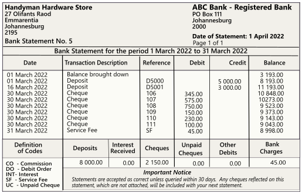

Bank reconciliation
|
|
Bank import plugin - Bank Reconciliations Plugin Manual - BankImport Plugin Manual - Shop - The Bank import plugin is included in the osFinancials5 subscription. The Bank import plugin will import bank transactions and save you hours of data entry. You can simply link transactions to your debtors, creditors or other accounts. And with a simple mouse click link the payments to the right invoices. Needs to be activated on the Setup ribbon, select Setup → System parameters. |

In addition to the petty cash account, the bank account is the only source where money can physically flow into and out of the business. The bank account should be strictly monitored to ensure that all the monies that are received are deposited, and that all the payments and/or cheques have been honoured.
The Bank reconciliation feature allows you to match, or reconcile, your Cashbook with the bank statement you receive from the bank. The bank reconciliation is a process of checking and comparing the transactions in your cashbook with the transactions on the bank statement.
All the transactions on the bank statement should be reflected in the cashbook and those transactions appearing in the cashbook, but not on the bank statement, should be reflected on the bank reconciliation statement.
When the bank statement is received, you will find that any bank costs (and interest if you have an overdrawn cheque account) is debited, and any interest that you have received on a positive bank balance is credited to your bank account. These transactions will appear on your bank statement, but will not appear in your cashbook. The same applies for debit orders and electronic payments as well as monies paid directly into your bank account by your customers or other parties.
The bank reconciliation helps you to identify these transactions and enter them into your cashbook. Another reason is the time factor. If you send a cheque to another supplier by post, this can take some time and the other party (beneficiary) to whom the cheque is issued, may bank the cheque too late for the bank to clear the cheque and reflect it on your bank statement. You may also have made a deposit up, after banking hours, and the deposit will only be reflected on the bank statement on the next day.
The bank reconciliation is carried out for a number of reasons. These are:
- Determining of outstanding cheques and deposits and reporting it in the Cashbook Reconciliation report:
- Outstanding deposits – Monies may have been received after banking hours and deposited into your bank account on the next day of the month or the day after the bank statement was printed.
- Outstanding cheques – All cheques that were issued may not yet have been presented to the bank by the recipient or beneficiary of the cheque. The cheque may have been presented at a different bank or may not yet have reached the beneficiary of the cheque.
|
|
osFinancials 5 allows you to match your Cash-book with your bank statement. You will always find that the bank costs and interest paid/received does not appear in your Cash-book. The same applies for debit orders and electronic payments as well as moneys paid directly into your bank account by your customers or other parties. This bank reconciliation helps you to identify these transactions and enter them into your general ledger. |

- Recording of transactions on the bank statement which do not appear in the cashbook:
- Electronic payments – Some electronic payments by debit orders may not reflect in the cashbook, but do appear on the bank statement.
- Bank charges and interest – The amount of these bank charges will only be known when the bank statement is received. Interest may also be received on a favourable bank balance and can only be recorded when the amount is known.
- Dishonoured cheques – Sometimes cheques deposited may have been returned to the drawer as there are no funds in the drawers account, or the cheque has not been signed, or many other reasons.
|
|
The transactions on the deposits (credit) side of the bank statement which are not yet recorded in the cashbook, should be entered in the receipts journal. The transactions on the payments (debit) side of the bank statement which are not yet recorded in the cashbook, should be entered in the payments journal. |
- Tracing and correction of errors:
- Errors of entered transactions – This may occur when receipts were recorded in the receipts journal and/or when payments were recorded in the payments journals. Amounts may have been entered incorrectly (e.g. 45 instead of 54).
- Errors of omission – Transactions have not been entered in the receipts or payments batches.
- Errors that may occur at the bank – This is usually when the teller at the bank has recorded the amount of a cheque or a deposit incorrectly. This is very rare and is sometimes rectified automatically by the bank. (This is also referred to as "error in cast" on bank statements).
- In the case where banks use the Automated Clearing Bureau (ACB) to read and record the cashed cheques electronically on your bank statement, you should take care that the cheques are written out clearly and correctly.
- Deposit slips should also be filled in correctly and the entries (cash and cheques, etc.) should add up correctly.
|
|
There are various reasons which may cause differences between the bank balance, as per bank statement, and the reconciled balance according to osFinancials 5. |
- Fraudulent cheques - The amounts on the bank statement should match the amount in the cashbook. If it does not, the cashed cheque should be scrutinised to determine that there was no tampering with the cheque.
You may receive a bank statement by fetching it from the bank or by post. An example of a bank statement is as follows:

The bank reconciliation is carried out for a number of reasons, such as:
- It checks to see that the transactions, which you have entered into osFinancials 5, are the same as the transactions, which went through your bank.
- It checks to see that these transactions which went through the bank are the same as those going through your osFinancials 5 program.
- It checks to see whether you or the bank is, in fact, correct.
- It will list all your outstanding cheques and receipts, thus giving you a reconciled bank balance, which would be the actual amount you would have in the bank, had all your transactions gone through the bank.